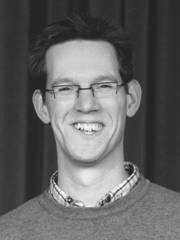

Ramon van den Boom (Tilburg, 1974) studeerde aan het Brabants Conservatorium. Hij voltooide de opleiding koordirectie bij Martien van Woerkum en Hoite Pruiksma en behaalde het diploma clavecimbel bij Cynthia Wilson en Rémy Syrier. Daarnaast volgde hij onder meer lessen zang, orkestdirectie, orgel en basso continuospel. In het afgelopen jaar heeft hij zich onder leiding van Louis Buskens verder bekwaamd als dirigent.
Ramon werkte een aantal jaren op het Fontys Conservatorium als docent ensembleleiding en dirigent van de koorklas, en was tot voor kort als dirigent verbonden aan het Eindhovens Studenten Muziek Gezelschap Quadrivium en het Eindhovens Kamerkoor. Op dit moment is hij muzikaal leider van het Tilburgs Vocaal Ensemble en het Hasselts Gemengd Kapelle Koor.
Als clavecinist treedt Ramon op in kamermuziekensembles of als solist. Zo was hij de afgelopen jaren regelmatig te horen in de serie ‘Muziek in de Cathrien’ in Eindhoven (o.a. met alle concerten voor twee, drie en vier clavecimbels van Bach), en reisde hij met een voorstelling van Purcells opera ‘King Artur’ door Bretagne (Frankrijk). Als basso-continuospeler verleent Ramon regelmatig medewerking aan diverse vocale en instrumentale ensembles.
Naast zijn werkzaamheden als musicus is Ramon werkzaam als consulent vocale muziek op het Centrum voor Amateurkunst Noord-Brabant, en als zodanig nauw betrokken bij het opleiden van amateur-koordirigenten.